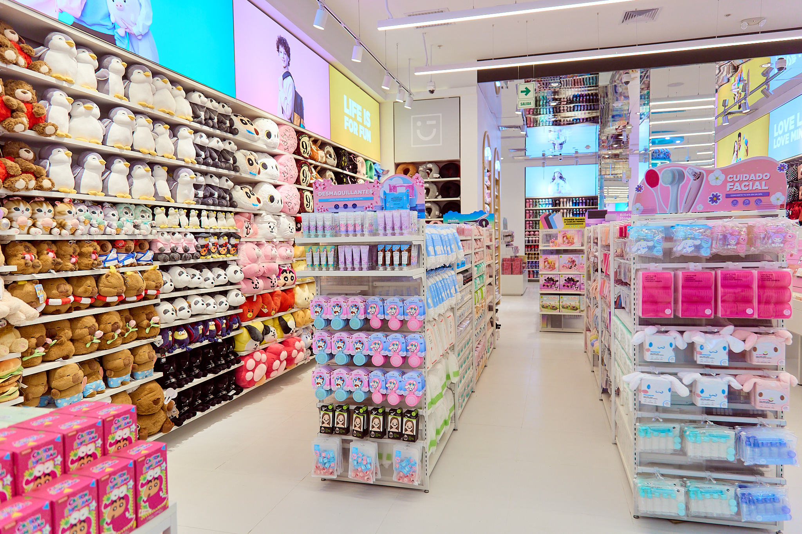
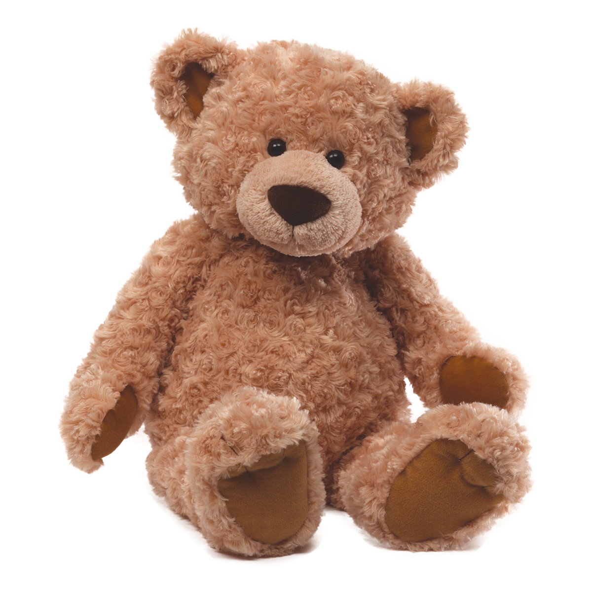

El fundador de la marca MINISO, Jack Ye, se inspiró para crear MINISO mientras estaba de vacaciones con su familia en Japón en 2013. Encontró varias tiendas especializadas en Japón que tenían productos de buena calidad, bien diseñados y económicos que se fabricaban principalmente en China. Con su conocimiento y experiencia en el desarrollo de productos, la cadena de suministro y la industria de la moda, Jack estableció MINISO con sede en Guangzhou, China, una marca que atiende a jóvenes de todo el mundo.

MINISO opera su negocio global bajo el eslogan de su marca "La vida es para divertirse". Hoy, MINISO ha ingresado con éxito a 100 países y regiones y ha abierto más de 5000 tiendas en todo el mundo, cubriendo los principales distritos comerciales de ciudades de renombre mundial como Nueva York, Los Ángeles, París, Londres, Dubai, Sydney y Estambul. MINISO continuará creando experiencias de vida alegres y de alta calidad para cientos de millones de consumidores en todo el mundo.
En Miniso estamos locos y está bien, queremos contagiar a cada MinisoLover allá afuera con lo que nuestra marca significa para nosotros.Desde el cuidadoso diseño de cada producto hasta la experiencia que cada persona tiene en nuestras tiendas debe ser algo memorable y único.Nuestro objetivo es siempre sorprender, siempre enamorar y siempre cumplir lo que prometemos.